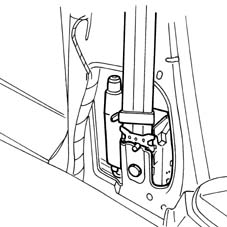
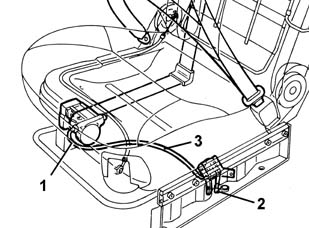
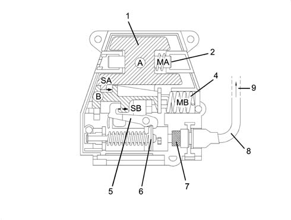
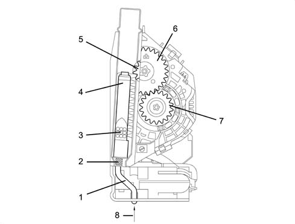
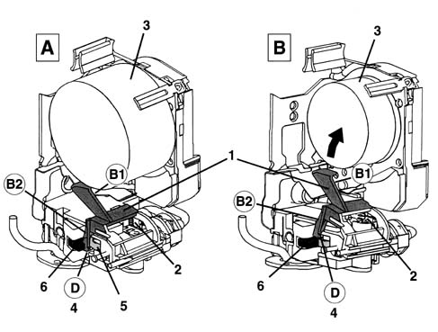
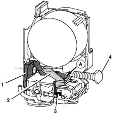
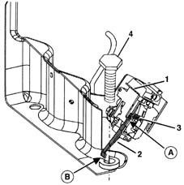

Introduction - SEAT BELTS AND ACCESSORIES
- Path
- Descriptions > 70 FITTINGS > 7065 SEAT BELTS AND ACCESSORIES > Introduction - SEAT BELTS AND ACCESSORIES
- Kind
- system description
- Applies to
- all engines; all production periods
- Interactive page
- https://sloeber94.github.io/elrnDB-fMltpl/en/#/2892464
Applies to: all engines; all production periods
The three front seats have pretensioned seat belts.
In the case of a fairly severe impact, they rewind the belt inside the reel by several centimetres, so that it adheres to the body of the occupant and they ensure that the occupant stays in contact with the seat backrest.
Pretensioners are pyrotechnic devices which can be mechanically activated by a special mechanical sensor connected to the actual pretensioner by means of an activating device known as a shock tube.
The sensor is integrated in the reel for the belts for the two side seats, whilst the centre seat is fitted with a separate sensor.
Side seat
-

Centre seat
-

1, Reel with pretensioner 2, Sensor 3, Shock tube device
At the end of the operation, the belt remains locked, thereby signalling that the device has been operated.
After an impact which has caused the intervention of the system, the entire group should be replaced
The operation of the mechanical sensor is based on the action of a force which arises - resulting from the deceleration of the vehicle - at two masses A (larger) and B (smaller) kept in place by opposing springs MA and MB, respectively.
In the case of vehicle deceleration mass A moves with a travel SA and this causes the movement of mass B as well with a travel SB.
A fairly severe impact will cause deceleration that produces a movement SA and consequently a movement SB which is sufficient to release the striker trigger.
The striker releases the pyrotechnic charge which activates the shock tube.

1, large mass A 2, large mass opposing spring MA 3, small mass B 5, small mass opposing spring MB 5, trigger 6, striker 7, 1st pyrotechnic charge 8, shock tube activating device 9, to the 2nd pyrotechnic charge
Through this device an impulse is transmitted to a second pyrotechnic charge which, in turn, sets off the gas generator.
The chemical reaction of the generator develops a gas whose pressure creates a force which thrusts a rack pinion upwards
The upwards movement of the piston causes the rotation of a first toothed wheel D1 and this, in turn, causes the rotation of a second toothed wheel D2, which engages with the reel bush: this produces a rotary movement of the reel in the opposite direction to the unwinding of the belt, which therefore rewinds by several centimetres.

1, shock tube activating device 2, 2nd pyrotechnic charge 3, gas generator 4, rack piston 5, toothed wheel D1 6, toothed wheel D2 7, reel bush 8, from the 1st pyrotechnic charge
Safety lock
The pretensioner for the side seats is fitted with a safety device which only enables the activation of the pretensioner when the seat belt is fastened.
This device consists of a lever whose arm B1 is thrust by a spring against the belt:
- when the belt is not fastened, it is fully wound on the reel- figure A : in this condition the tooth D at the end of the arm B2 for the lever locks the trigger which prevents any movement of the mass, thereby preventing any activation of the pyrotechnic charge;
- when the belt is fastened, it unwinds from the reel- figure B : in this condition the outer diameter of the band is reduced and therefore the lever rotates so that the tooth D releases the mass which is free to move, thereby causing the activation of the pyrotechnic charge, in the case of strong deceleration, as described previously.

1, lever 2, spring 3, belt band 4, tooth D 5, trigger 6, mass
Safe transportation
The pretensioner on both versions - side and centre - is equipped with a safety device which allows it to be moved and transported without any danger of accidental activation.
Side pretensioner safety device:
The device consists of a special spring, fixed to the actual reel bracket, which locks the mechanical sensor mass.
If the pretensioned seat beltisnotfitted on the vehicle, the end A of the spring presses the safety lever which locks the tooth preventing any movement of the sensor masses (see description for the safety lock.)
When the reel is fixed to the pillar by the special bolt, the spring is pressed and the end A releases the lever, which no longer locks the tooth: in this way the two sensor masses are free to move, thereby causing the activation of the pyrotechnic charge, in the case of strong deceleration, as described previously.

1, spring 2, safety lever 3, tooth 4, fixing bolt
Centre pretensioner safety device
This device consists of a special safety lever, which locks the mechanical sensors masses.
If the centre seat with a pretensioner is not fitted in the vehicle, the end A of the safety lever is thrust by the spring against the sensor: in particular, the tooth prevents any movement of the sensor masses.
When the seat is fixed to the floor by the special bolt, the end B of the lever is lowered and therefore the end A of the same lever rises and releases the tooth: in this way the two sensor masses are free to move, thereby causing the activation of the pyrotechnic charge, in the case of strong deceleration.

1, spring 2, safety lever 3, tooth 4, fixing bolt